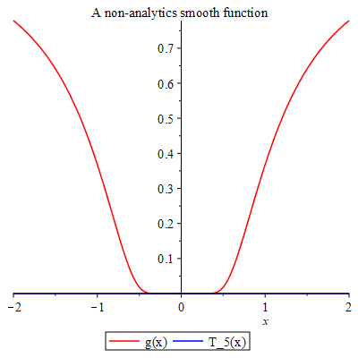

Topic 11 Infinite Sequences and Series
11.1 Introduction to Sequences and Series
A sequence is a list of numbers in a definite order (indexed by integers). A series may be considered as the limit of the sequence of partial sums.
When the sequence is explicitly defined by an mathematical expression \(a_n=f(n)\), Maple has the following command to list numbers of the sequence seq(f, i=m..n, step).
Example 11.1 Find the first 10 terms of the sequence \(\{\frac{1}{n(n+1)}\}_{n=1}^\infty\). Determine whether the sequence \(\{\frac{1}{n(n+1)}\}\) is convergent or divergent.
Solution.
# using seq
seq(1/(n*(n+1)), n=1..10)The sequence converges to \(0\).
For a series \(\sum a_n\), normally it is not easy to find explicit expression for the partial sum \(s_n=\sum\limits_{k=1}^n a_k\). However, if sequence is defined by an mathematical expression \(a_n=f(n)\), we may find values of partial sums recursively use a for/from loop statement in Maple:
for *counter* from *initial* by *increment* to *final* do
statement_sequence;
end do;Example 11.2 Find the first 20 partial sums \(s_k=\sum_{n=1}^{n}a_n\) of the infinite series \[ \sum_{n=0}^\infty\frac1{2^n}=1+\frac12+\frac14+\frac18+\cdots. \] Determine whether the series \(\sum_{n=0}^\infty\frac1{2^n}\) is convergent or divergent.
Solution.
# Set up s when n=0
s:=1
# Find 10 terms using `for/from loop`
for n from 1 to 10 do
s:=s+1/(2^n);
end do;The series converges to 2.
Of course, we may also use for/from loop to list numbers of a sequence.
Solution. Second solution to example 11.1.
# using `for/from loop`
for n from 1 to 10 do
1/(n*(n+1);
end do;When the sequence is defined by a recurrence formula like the Fibonacci sequence, we will need to Maple how to interpret the formula. For that purpose, we use a procedure, which encloses a sequence of statements between proc(...) and end proc, to define the formula in Maple.
For example, the following is a procedure that defines a function \(a(x)=\sqrt{x}-\frac{1}{\sqrt{x}}\):
a:=proc(x) sqrt(x)-1/sqrt{x}; end proc;To structure codes in a procedure, you may use Code Edit Region which can be find in the Insert menu.
To execute codes within this region, click Execute Code from the Edit menu, or use the shortcut command Ctrl+E.
Example 11.3 The Fibonacci sequence is defined by \(fib(0)=0\), \(fib(1)=1\) and \(fib(n)=fib(n-1)+fic(n-2)\). Find the first 20 Fibonacci numbers.
Solution. We first define a function \(fib(n)\) which returns the \(n\)-th Fibonacci number.
fib := proc (n::nonnegint)
if 2 <= n then
return fib(n-1)+fib(n-2):
else
return n:
end if;
end procNow we can use either seq() or for/from loop.
seq(fib(n), n=0..19)
Exercise 11.1 Find the first 20 terms of the sequence \[ \{\sin{\frac{\pi}{n}}\}_{n=1}^\infty. \] Determine whether the sequence \(\{\sin{\frac{\pi}{n}}\}\) is convergent or divergent.
Exercise 11.2 Find the first 20 partial sums \(s_k=\sum_{n=1}^{n}a_n\) of the infinite series \[\sum_{n=0}^\infty\frac1n=1+\frac12+\frac13+\frac14+\cdots. \] Determine whether the series \(\sum_{n=0}^\infty\frac1n\) is convergent or divergent.
Exercise 11.3 Find the 20th to 30th Fibonacci numbers.
11.2 Power Series
A power series is a series with a variable \(x\): \[ \sum\limits_{n=0}^{\infty} c_nx^n=c_0+c_1x+c_2x^2+c_3x^3+\cdots. \]
More generally, a series of the form
\[\begin{equation} \sum\limits_{n=0}^{\infty} c_n(x-a)^n=c_0+c_1(x-a)+c_2(x-a)^2+c_3(x-a)^3+\cdots \tag{11.1} \end{equation}\]
is called a power series at \(a\).
We call a positive number \(R\) the radius of convergence of the power series (eq:Taylor-series) if the power series converges whenever \(\left|x-a\right|<R\) and diverges whenever \(\left|x-a\right|>R\).
If a function \(f\) has a power series representation, i.e. \[ f(x)=\sum_{n=0}^\infty c_n(x-a)^n,\quad\quad \left|x-a\right|<R, \] then its coefficients are given by \(c_n=\dfrac{f^{(n)}(a)}{n!}.\)
Example 11.4 Find the interval of convergence of the power series \[ \sum\limits_{n=1}^{\infty}\dfrac{(-2)^nx^n}{n^3}. \]
Solution.
# Find the abs(a_{n+1}/a_n)
q:=abs((-2)^(n+1)(n+1)^3/(-2)^(n+1)(n+1)^3);
# Find the limit of q
r:=limit(simplify(q), n=infinity)
# Find the interval of convergence
solve(abs(x)<1/r, x)Example 11.5 Find the Taylor expansion of the function \(f(x)=\dfrac{1}{x-2}\) at \(x=0\) up to the 5-th order. Plot \(f(x)\) and the \(5\)-th order Taylor polynomial together.
Solution.
# Find the Taylor expansion.
ftaylor:=taylor(1/(x-2), x = 0, 5)
# convert the Taylor series into a polynomial
fpoly:=convert(ftaylor, polynom)
# Plot the functions
plot([1/(x-2), fpoly], x=-1..1)Exercise 11.4 Find the interval of convergence of the power series \[ \sum\limits_{n=1}^{\infty}\dfrac{(-4)^nx^n}{\sqrt{n}}. \]
Exercise 11.5 Find the Taylor expansion of the function \(f(x)=\sin x\) at \(x=0\) up to the 5-th order. Plot \(f(x)\) and the \(5\)-th order Taylor polynomial together over the interval \([-\pi,\pi]\).
11.3 Taylor Expansion
Let \(f(x)\) be a function. Assume that the \(k\)-th order derivatives \(f^k(a)\) exist for \(k=1, 2, \dots, n\). The polynomial \[ T_n(x)=\sum_{k=0}^n\dfrac{f^{(n)}(a)}{k!}(x-a)^k \] is called the \(n\)-th degree Taylor polynomial of \(f\) at \(a\).
Let \(f(x)\) be a function has derivative at \(a\) up to all orders. Set \[ R_n(x)=\sum_{k=n+1}^\infty \dfrac{f^{(k)}(a)}{k!}(x-a)^k,\quad\quad \left|x-a\right|<R, \] which is called the reminder of the Taylor series \[ \sum\limits_{k=0}^\infty \dfrac{f^{(k)}(a)}{k!}(x-a)^k. \]
If \[ \lim\limits_{n\to\infty} R_n(x)=0 \] for \(\left|x-a\right|<R\), then \(f(x)\) is the sum of the Taylor series on the interval, that is \[ f(x)=\sum\limits_{k=0}^\infty \dfrac{f^{(k)}(a)}{k!}(x-a)^k,\quad\quad \left|x-a\right|<R. \]
If \(\left|f^{n+1}{x}\right|\leq M\) for \(\left|x-a\right|\leq d\), then the reminder \(R_n\) satisfies the follow inequality \[ \left|R_n(x)\right|\leq \dfrac{M}{n+1}\left|x-a\right|^{n+1}\quad \text{for}\quad \left|x-a\right|\leq d. \]
Roughly speaking, the absolute value of the reminder \(\left|R_n(x)\right|\) determines how accurate the Taylor polynomial approximation.
Example 11.6 Approximate function \(f(x)=\sin x\) by the degree 3 Taylor polynomial at \(x=1\).
Solution.
# Find the Taylor series.
fTs:=taylor(sin(x), x = 0, 4)
# Convert the Taylor series into a polynomial
fTp:=convert(fTs, polynom)
# Evaluate the Taylor polynomial at 1
subs(x=1, fpolyapprox)Example 11.7 Plot the function \[ g(x)=\begin{cases}e^{-\frac{1}{x^2}} & x\neq 0\\ 0 & x=0\end{cases} \] and its 5-th order Taylor polynomial over the domain \([-2..2]\). What can you conclude?
Solution.
# Define a piece-wisely defined function.
g:=piecewise(x!=0, exp(-1/x^2), 0)
# Find Taylor polynomial of degree 5.
for n to 5 do T := (eval(diff(g(x), x$n), x = 0))*x^n/factorial(n)+T end do
# Plot the functions
plot([g,T],x=-2..2, color=[red, blue])The graphs of the functions are shown in the picture. 
In the solution, x$n is a shortcut option for x, x, x, x, x in the diff command.
Exercise 11.6 Approximate function \(f(x)=e^x\) by the degree 5 Taylor polynomial at \(x=1\).
Exercise 11.7 Compare the function \(y=\sin x\) with its degree 10 Taylor polynomial at \(x=0\).